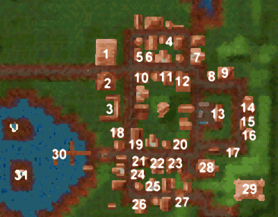

Silver Cove: City Map

| Silver Cove | |
| 1. | Anchors Away Inn |
| 2. | Abdul's Discount Travel |
| 3. | Abdul's Discount Training Center |
| 4. | Well, +20 temporarily to Intellect, and Personality |
| 5. | Trader Joe's |
| 6. | Bank |
| 7. | Master Learning Training, 7 Skill and 30 Intellect |
| 8. | Berserker's Fury Membership 50 Gold |
| 9. | Master of the Mind (12 Skill, 4000 Gold) / Master of the Body (12 Skill, 4000 Gold) |
| 10. | Abdul's Discount Armor |
| 11. | Repair Expert 500 Gold |
| 12. | Berserker's Fury |
| 13. | Town Hall |
| 14. | Expert Light Magic 2000 Gold |
| 15. | Earth Guild Membership 100 Gold |
| 16. | Guild of Self Membership 100 Gold |
| 17. | Quest to Deface Monolith, Eleanor Vanderbilt |
| 18. | Expert Spear Training 2000 Gold |
| 19. | Abdul's Discount Weapons |
| 20. | Protection Services |
| 21. | Abdul's Discount Magic Supplies |
| 22. | Initiate Guild of Earth |
| 23. | Initiate Guild of Light |
| 24. | Master Earth Magic (12 Skill, 4000 Gold) |
| 25. | Expert Meditation 500 Gold |
| 26. | Adept Guild of Self |
| 27. | Master Merchant Training (10 Skill, 30 Intellect) |
| 28. | Silver Cove Temple |
| 29. | Quest to fix shipping prices,Castle Fliese |
| 30. | Quest to fix shipping prices,Castle Fliese |
| 31. | +2 to speed permanently |
Leave us a message mgrounds@hotmail.com